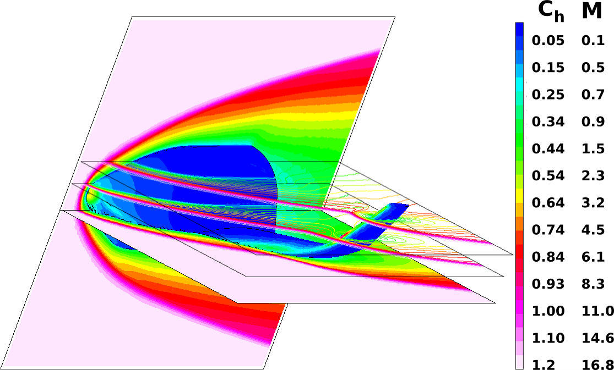
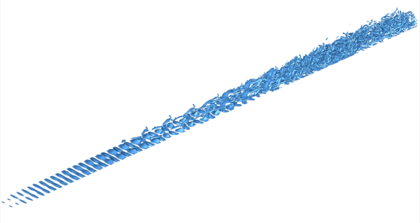

Направления исследований
enЧисленные и экспериментальные исследования будут направлены на установление фундаментальных физических закономерностей в следующих областях:
Аэротермодинамика перспективных космических аппаратов

Поле числа Маха и распределение коэффициента теплопередачи на поверхности КА «Клипер».
Традиционные и передовые технологии создания реактивной тяги

Стартовый процесс в микросопле, расчет на основе модельных кинетических уравнений.
Газовые и многофазные течения в микроустройствах и микросоплах

Развитие неустойчивостей и ламинарно-турбулентный переход в гиперзвуковых течениях

Неустойчивость пограничного слоя на плоской пластине M = 6, изоповерхности завихренности (Q-критерий).
А также решение прикладных аэрокосмических задач в данных областях